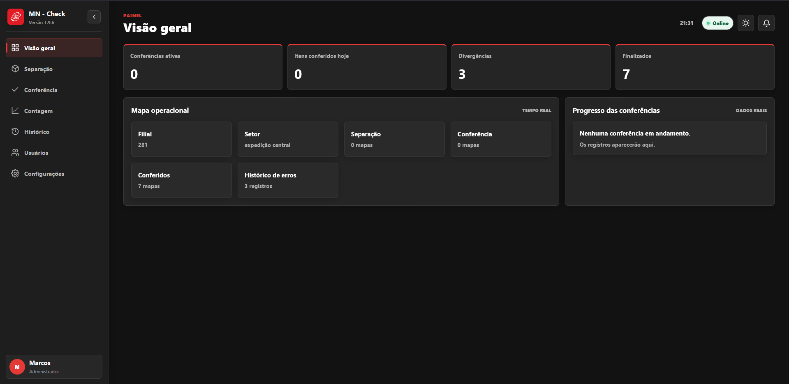

Entender a rotina vem antes de escolher ferramentas.
Aberto a oportunidades e novos projetos
Back-end · Sistemas web · Automação
Eu transformo problemas operacionais em produtos que funcionam.
Sou Marcos Neto, estudante de Ciência da Computação na UNIFACISA. Desenvolvo sistemas com back-end bem estruturado, interfaces claras e foco em resolver problemas reais.
- 02produtos
publicados - CCCiência da Computação
UNIFACISA - Fullback-end primeiro,
produto completo
Marcos Neto // dev
statusbuilding...
01 Sobre mim
Não estudo tecnologia só na teoria. Eu construo com ela.
Minha especialidade é back-end, mas gosto de acompanhar o produto inteiro: da compreensão da operação até a interface que alguém realmente vai usar.
Atualmente curso Ciência da Computação na UNIFACISA e direciono meus estudos para Java, APIs, bancos de dados, automação e sistemas aplicados à logística.
Fluxos claros tornam sistemas mais seguros e fáceis de evoluir.
Do banco de dados até a experiência de quem opera.
02 Trabalho selecionado
Produtos reais, não apenas exercícios.
Projetos criados para organizar operações, reduzir erros e dar visibilidade a processos importantes.

01 / destaqueMN Check
Sistema para separação, conferência de expedição e contagem de estoque, criado para reduzir erros em SKU, cor, voltagem, quantidade e saldo.
Processos manuais com pouca rastreabilidade e alta exposição a divergências.
Fluxo integrado de mapas, leitura por coletor, dupla conferência e histórico auditável.
- Java 21
- Spring Boot
- PostgreSQL
- PDFBox
- React
- Docker
Ver detalhes técnicos +
Minha participaçãoDesenvolvimento full-stack do fluxo operacional, API, persistência, leitura de documentos, validação de códigos, interface, testes e publicação.
DesafioConverter PDFs e imagens variados em mapas revisáveis, combinando IA com validações determinísticas e rastreabilidade entre etapas.
Gestão de Jornada
Painel administrativo para organizar estrutura empresarial, escalas, funcionários, registros de ponto, ajustes e banco de horas.
- React
- Vite
- Tailwind
- API REST
- JWT
O que torna o projeto especial +
Isolamento de dados por empresa, diferentes perfis de acesso, reconhecimento facial, sincronização offline de tablets e auditoria de ajustes.
Chronos
Site comercial para uma plataforma de gestão de jornada com reconhecimento facial, operação offline, banco de horas e estrutura multiempresa.
- HTML
- CSS
- JavaScript
- SEO
- Vercel
O que torna o projeto especial +
Comunicação comercial completa, planos, FAQ, acessibilidade, páginas de privacidade e biometria, dados estruturados e conversão pelo WhatsApp.
03 Como eu construo
Do problema ao sistema.
Uma abordagem simples para transformar rotinas complexas em software utilizável.
- 01Entender a operação
Mapear pessoas, etapas, exceções e o resultado esperado.
- 02Modelar regras e dados
Organizar entidades, estados, validações e responsabilidades.
- 03Construir o fluxo completo
Integrar back-end, dados e uma interface clara para a rotina.
- 04Validar e evoluir
Testar casos reais, corrigir arestas e preparar o próximo ciclo.
04 Stack e competências
Back-end
Regras de negócio, serviços e integrações.
JavaSpring BootJDBCAPIs REST
Dados
Persistência, modelagem e histórico.
PostgreSQLNeonSQLModelagem
Front-end
Interfaces responsivas para produtos completos.
HTMLCSSJavaScriptReact
Ferramentas
Automação, documentos e entrega.
PythonPDFBoxDockerGitRailway
Tem uma oportunidade ou um problema para resolver?
Vamos construir algo útil de verdade.
Estou aberto a vagas, projetos freelance e conversas com pessoas que valorizam tecnologia aplicada a problemas reais.